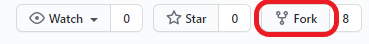
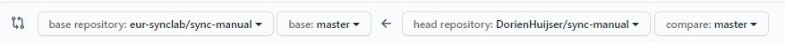

How to contribute
Introduction to git(hub) and Markdown
What are git & github?
- Git is a version control system: it tracks the history as you change files. More specifically, it tracks who made which changes and when. It allows reverting files to a previous state. Note that it is possible to work on git projects locally without ever using github.
- Github is a git hosting platform that you can use to collaborate on projects that use git. It additionally allows for threaded discussions (issues), pull requests and several github apps.
Installation
- Create a Github account (or log on)
-
Become member of the EUR-synclab organization
-
Install git locally (click here for instructions for RStudio) and some Markdown editor (see below)
The git workflow
When working on a git project (within a folder called a git repository), you will always perform the following steps:
- Make changes to some file
- Commit the changes: make a snapshot of the changes made so far. A commit (snapshot) is always accompanied by a commit message explaining what changes were made
Any commit gets a specific identifier that can be used to reverse (undo) the commit.
Branches
A git repository can exist in multiple “versions” which are called branches. There is always a “master” branch, which you should consider the clean branch. Besides that, you can create other branches that are meant to make your own changes. After you have made changes in your own branch and you think they should be incorporated in the master branch, you can then merge your branch with the master branch.
Workflow on github
On Github, the workflow is a bit more extensive, because often you are collaborating and do not want others to just start editing the master branch right away. There are multiple methods to collaborate on a project, but we recommend the following, assuming that there is already a repository for the project and you want to contribute:
- On the repository page on Github, fork the repository: this creates a copy of the repository on your own Github account that you have full access to
- In your repository, create a new branch for the changes you are about to make with a short but comprehensible name, e.g. “dorienwritecontent”.
- Skip this step if you are editing online: If you want to edit files locally, clone your repository to your local PC, creating a folder in your file explorer (the contents of which can change according to which branch you are on!). You can use the command line or a tool such as Rstudio or GitKraken to do this.
- Edit the files you want to edit and commit the changes (making a snapshot; include a commit message!)
- Skip this step if you are editing online: You have now committed changes locally, but they are not yet visible in your “remote” repository, i.e., the online github repository on your account. In order to get the commits to be visible online, you need to push them to your remote repository on Github.
- Now the changes are visible in your own account, but not in the main repository. In order to get your changes into the main repository, you need to do a pull request. This is a request to the owners of the original repository to merge your branch with theirs. Once merged by the owners, you are often prompted to remove your own branch (which is not necessary if you are planning to make more changes later).
Keeping your local copy (clone) up to date
If you are working on a project with many collaborators making changes, the odds are that your own fork (online copy) and/or clone (local copy) are becoming out-of-date quite fast. Therefore, it is recommended to update those copies each time before you start making changes yourself, so you are certain that you are working on the most recent versions of the files.
- Not recommended: Online (in your fork), you can do this by doing a reverse pull request: a request to yourself to merge the owner’s master branch (“upstream master”) into your own branch that you will be working in.
- Recommended: In your clone (offline), you can set up the owner’s master branch (“upstream master”) as the upstream master and pull changes from the upstream master (see this page for command-line instructions and this page when you use RStudio). You are simply pulling all changes made to your local PC this way. To update your online version of the repository, simply push the changes (e.g.,
push origin master) after pulling from the upstream master (the owner's master branch).
Further reading on git(hub)
- More info on the Git workflow (especially useful if you are going to use git via the command line)
- Github guide: git handbook
- Free github introduction course (duration ca. 1 hour)
- Using Git(hub) with Rstudio: https://happygitwithr.com/
- Introduction on Github by Ana Martinovici
Markdown
Markdown is a markup language that you can use to add formatting elements to plaintext text documents. When you create a Markdown-formatted file, you add Markdown syntax to the text to indicate which words and phrases should look different. Every .md (Markdown) file in this repository in fact uses Markdown for formatting!
For example, to indicate a second-level header, you type: ## Title of header
Advantages of Markdown:
- It can be used for a lot of things, e.g., for creating html pages
- It is platform- and operating system independent
- You can type markdown in any text editor and open .md files with many programs, such as Atom, Zettlr, Rstudio, Typora, online (e.g.,Dillinger) or even in Word (Writage tool). See this page for more tools that support Markdown.
Markdown resources
How to contribute?
The easy (but not recommended) way
-
forkthe repository to your own Github account by clicking the button on the upper right of the repository:  -
Make edits to the files you want to edit in your browser by clicking the pencil at the top right of a file. All editable .md files can be found in the
docsfolder
-
 Write a commit message for your changes and click
Write a commit message for your changes and click Commit changes. -
After having made all the changes you wanted, go to the tab
Pull requests>New pull request.
-
Make sure the base repository is
eur-synclab/sync-manualmasterand head repository is your own repository, e.g.,DorienHuijjser/sync-manualbranchinwhichyoumadechanges.  -
Click
Create pull request -
Your pull request will now appear in the eur-synclab repository list of pull requests. If you want, you can assign someone to review your pull request. One of the owners of the repository will review your commits, may request changes and will finally approve the pull request and merge your changes into the eur-synclab/sync-manual master branch.
The better way
forkthe repository to your own Github account by clicking the button on the upper right of the repository:- Create a new branch in your forked repository which you will use to make changes in (so your master branch will stay"clean"):

cloneyour forked repository to your local PC (using the command-line or Rstudio)- Make local changes. You can open a .md file in the
docsfolder with multiple text editors such as Typora, Atom, Zettlr, Rstudio, etc.) and, after saving your changes, commit them (command-line:git commit -a -m "commit message", RStudio. Your changes are now saved locally. - Push your commits to your “remote” (online) repository (using the command-line:
git push origin branchname, in Rstudio) - Follow steps 4-7 explained in the Easy way
- Important: the next time you start working locally, first update your local version of the repository to the most recent version (Command line:
git pull upstream [branchname][be sure to set the upstream repository first], RStudio).
The most advanced way
- Follow the installation steps for mkdocs here
- Follow steps 1-4 explained in The better way
- In your prompt, navigate to your repository directory with
cd C:/users/username/your/repo/directoryand runmkdocs serve. This creates a URL (something like http://127.0.0.1:8000/) which you can open in your internet browser. Here, you can see all changes that you make directly "live". Press Cntrl+C to stop this operation. - Run
mkdocs build. If everything goes correctly, you can now also open the new .html files in thesync-manual/sitefolder to see what your changes will look like in the browser. These files have to be created in order for the website to work on others' computers. - Follow step 5-7 explained in The better way.
Add yourself as a contributor!
- Go to this Github issue.
- Type a comment asking the all-contributors bot to add you (use template mentioned in the issue), look for appropriate emojis here.
- The bot will open a pull request to add you as contributor. After merging with the master branch, your face will appear in the README.md!
Issues and Projects
If you would like to see a change that requires more work or input from others before you can start editing yourself, you can open an Issue. There are some great features about Issues:
- You can assign people to the Issue who should solve it or provide input
- You can add the issue to a project. In the tab Projects, you can find our Kanban board in which we have made the columns “To do”, “In progress” and “Done”. We made this so we have an overview of Issues that still need work and issues that are in progress.
- You can add labels to an Issue (please do so!) to specify what kind of issue you are writing
- After the issue has been solved, you can Close it manually. However, if you made a pull request that solves the issue, you can simply comment
Closes #issuenrin the pull request. After the pull request has been merged, the issue is automatically closed!